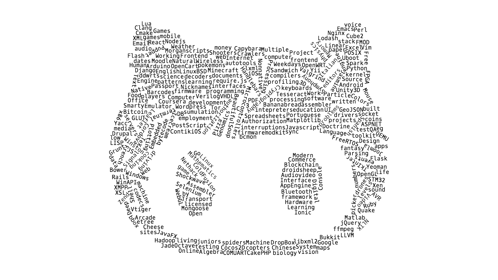

Topic Modeling of GitHub Repositories
Topic modeling is the machine learning subdomain which is devoted to extracting abstract “topics” from a collection of “documents”. Each “document” is represented by a bag-of-words model, that is, a set of occurring words and their frequencies. Since I am Russian, I had the introduction to topic modeling through the awesome lectures by Dr. Vorontsov at Yandex’s School for Data Analysis PDF. There exist different models to do topic modeling, the most famous (but not the best) being Latent Dirichlet Allocation (LDA). Dr. Vorontsov managed to generalize all possible bag-of-words-based topic models into Additive Regularization of Topic Models methodology (ARTM). Thus LDA becomes a subset of possible ARTMs. The really cool thing about ARTM is that Dr. Vorontsov’s PHd students developed the proof-of-concept software and it is open source: bigartm/bigartm [1, 2].
Normally, topic modeling is applied to ordinary text documents. We at source{d} struggle with huge amount of data originated from GitHub repositories (and soon we’ll handle every open source repository in the world). A natural idea is to treat every repository as a bag-of-words and apply Dr. Vorontsov’s powerful engine for topic modeling. For example, we could extract names from the source code and consider them “words”. This article elaborates in this direction, presents the results and explains how to repeat them.

TL;DR:
docker run srcd/github_topics apache/spark
(replace apache/spark with any GitHub repository you wish to analyze).
OpenDocument spreadsheet with the extracted topics.
JSON with the extracted topics.
Trained model - 40M, gzipped pickle for Python 3.4+, Pandas 1.18+.
Theory
Suppose that we have a topic probabilistic model of the collection of documents \(D\) which describes the occurrence of terms \(w\) in document \(d\) with topics \(t\): $$ p(w|d) = \sum_{t\in T} p(w|t) p(t|d) $$ Here \(p(w|t)\) is the probability of the term \(w\) to belong to the topic \(t\), \(p(t|d)\) is the probability of the topic \(t\) to belong to the document \(d\), thus the whole formula is just the expression of total probability, accepting the hypothesis of conditional independence: \(p(w|d,t) = p(w|t)\). Terms belong to the vocabulary \(W\), topics are taken from the set \(T\) which is simply the series of indices \([1, 2, \dots n_ t]\).
We’d like to solve the problem of recovering \(p(w|t)\) and \(p(t|d)\) from the given set of documents \(\left\{d\in D: d = \left\{w_ 1 \dots w_ {n_ d}\right\}\right\}\). We usually assume \(\hat{p}(w|d) = \frac{n_ {dw}}{n_ d}\), \(n_ {dw}\) being the number of times term \(w\) occurred in document \(d\), but this implies that all the terms are equally important which is not always true. “Importance” here means some measure which negatively correlates with the overall frequency of the term. Let us denote the recovered probabilities as \(\hat{p}(w|t) = \phi_ {wt}\) and \(\hat{p}(t|d) = \theta_ {td}\). Thus our problem is the stochastic matrix decomposition which is not correctly stated: $$ \frac{n_ {dw}}{n_ d} ≈ \Phi \cdot \Theta = (\Phi S)(S^{-1}\Theta) = \Phi’ \cdot \Theta’ $$ It is said that regularization is desirable for stating machine learning problems; in our case, this is obligatory. In other words, if we don’t add any additional constraints, we are going to end up bad.
The problems like the one from above can be solved by applying maximum likelihood estimation: $$ \sum_ {d\in D}\sum_ {w\in d}n_ {dw}\ln \sum_ {t}\phi_ {wt} \theta_ {td} \to \max_{\Phi,\Theta} $$
with the conditions
$$ \phi_ {wt} > 0; \sum_ {w\in W}\phi_{wt} = 1; \theta_ {td} > 0; \sum_ {t\in T}\theta_ {td} = 1. $$
The idea of ARTM is to naturally introduce regularization as an extra additive member: $$ \sum_ {d\in D}\sum_ {w\in d}n_ {dw}\ln \sum_ {t}\phi_ {wt} \theta_ {td} + R(\Phi,\Theta) \to \max_{\Phi,\Theta} $$
Since this is a simple summation, one can combine any specific regularizers in the same statement, for example, increasing the sparsity and making topics uncorrelated. Well-known LDA can also be formulated in ARTM terms: $$ R(\Phi,\Theta)_ {Dirichlet} = \sum_ {t,w} (\beta_ w - 1)\ln \phi_ {wt} + \sum_ {d,t} (\alpha_ t - 1)\ln \theta_ {t,d} $$
The variables \(\Phi\) and \(\Theta\) can be effectively calculated with iterative EM algorithm. Tens of ready to use ARTM regularizers are here thanks to bigartm/bigartm.
Practice
So we’ve got 18M GitHub repositories. Let’s assume that each repository is \(d\), and each name used in the source code belonging to that repository is \(w\). Source code is analyzed pretty much the same as we do with deep source code learning (see the related presentations from RE·WORK conferences: Berlin and London): classified with github/linguist and parsed with Pygments. All general textual data is discarded, e.g. README.md.
The names should be extracted with care, for example, class FooBarBaz adds three words to the bag: foo, bar and baz, or
int wdSize should add two: wdsize and size. Besides, names should be stemmed, though I didn’t research on
whether the results are better without stemming. The particular stemming algorithm used was
Snowball from NLTK. The last preprocessing step is to
apply the logarithmic flavor of TF-IDF weighting
(again, not researched much on this, just did what’s
good
for generic NLP) and filter too rare and too widespread names, in our case, 50 and 100000 respectively.
After getting the ARTM result, I had to manually label the topics according to the key words and the related repositories. I set the number of topics to 200 but it turned out that I should have set a greater number as the variance of topics on GitHub is really big.
I did the initial preprocessing on Dataproc and the final steps locally on a powerful workstation. The resulting sparse matrix size was around 20 GB and had to be converted into simple text-based Vowpal Wabbit format so that BigARTM CLI program could work with it. The dataset was crunched rather fast, in less than 2 hours on a single computer:
bigartm -c dataset_vowpal_wabbit.txt -t 200 -p 10 --threads 10 --write-model-readable bigartm.txt --regularizer "0.05 SparsePhi" "0.05 SparseTheta"
Parsing text collection... OK.
Gathering dictionary from batches... OK.
Initializing random model from dictionary... OK.
Number of tokens in the model: 604989
================= Processing started.
Perplexity = 586350
SparsityPhi = 0.00214434
SparsityTheta = 0.422496
================= Iteration 1 took 00:11:57.116
Perplexity = 107901
SparsityPhi = 0.00613982
SparsityTheta = 0.552418
================= Iteration 2 took 00:12:03.001
Perplexity = 60701.5
SparsityPhi = 0.102947
SparsityTheta = 0.768934
================= Iteration 3 took 00:11:55.172
Perplexity = 20993.5
SparsityPhi = 0.458439
SparsityTheta = 0.902972
================= Iteration 4 took 00:11:56.804
...
-p sets the number of iterations. I wasn’t clear enough about what regularizers I should use so I activated only “sparsity”.
I hope the project will improve the documentation and add examples about them. It is
important to notice that the amount of RAM needed for the operation was rather low,
no more than 30 gigs and this is a huge success on gensim and, oh god please no,
sklearn background.
Topics
The resulting 200 topics can be divided into the following groups:
- Concepts - general, broad and abstract.
- Human languages - it appeared that one can determine programmer’s approximate native language looking at his code, thanks to the stem bias.
- Programming languages - not so exciting since this is the information we already have. Programming languages usually have a standard library of classes and functions which is imported/included into most of the programs, and the corresponding names are revealed by our topic modeling. Some topics are more narrow than a programming language.
- General IT - the topics which could appear in Concepts if had an expressive list of key words but do not. The repositories are associated by the unique set of names in the code without any special meaning.
- Communities - devoted to some specific, potentially narrow technology or product.
- Games - video games.
- Bullshit - 2 topics which I really don’t know what they mean.
Concepts
The most interesting group in my opinion is Concepts, since we mined much useful information:
- Pizza contains cheese and there are GitHub repositories about it.
- Mathematics, linear algebra, cryptography, machine learning, digital signal processing, genomics, particle physics terminology.
- Weekdays. Monday, Tuesday and so on.
- All possible facts and characters in RPG and other fantasy games.
- IRC has nicknames.
- A lot of design patterns (thanks to Java and PHP for them).
- Colors. Including some exotic ones.
- Emails have CC, BCC and are sent through SMTP and received through POP/IMAP.
- How to make a good datetime picker. Seems to be a pretty common GitHub project, eh.
- People work for money and spend them on houses and driving (apparently, from houses to the work and back).
- All sorts of computer hardware.
- Exhaustive list of HTTP, SSL, Internet, Bluetooth and WiFi terms.
- Everything you want to know about memory management.
- What to google if you want to create a custom Android firmware.
- Barcodes. Plenty of different types.
- Humans. There are men and women, they live and they have sex.
- Good list of text editors.
- Weather. Tons of common words.
- Free licenses. This was not supposed to happen because source code names and licenses do not intersect. From my experience with Pygments, some languages are supported much worse than the others and I guess some of the texts were recognized as sequences of names.
- Commerce. Shops have discounts and sell goods to customers.
- Bitcoins and blockchain.
Human languages
Human languages contain Spanish, Portuguese, French and Chinese.
Programming languages
An interesting find in Programming languages is the topic “Non-native English PHP” which associates with PHP projects written by non-native English speakers (or not speakers at all). Besides, now we know that Java has JNI and bytecode.
General IT
General IT is not so fun. There are a lot of OS kernel repositories which are large and make the topics noisy, but still we’ve got some worth mentioning:
- Comprehensive information about drones. They use Linux.
- There are a lot of Ruby implementations. Some are hard forks (that is, not marked as fork by GitHub) and some are extreme forks (that is, uploaded codebase without any history).
- onmouseup, onmousedown and onmousemove - these are the three giants holding the UI.
- Plenty of Javascript buzz words and technologies.
- Online education platforms. Especially Moodle. Tons, tons of Moodle.
- All sorts of CMS.
- Coursera Machine Learning gives a great list of repositories with homeworks for Coursera’s popular ML courses.
Communities
Communities is the largest group which is almost half of the size of the whole. We’ve got all the web engines written in Python, Ruby, PHP, Java, Javascript, etc. A lot of repositories are actually private storages of text editor configurations, namely Vim and Emacs. Since there is only one topic for Vim and Emacs has two, I hope that this will be the ultimate end in the holy war.
PHP engines which were discovered are Wordpress, Joomla, Yii, VTiger, Drupal, Zend, Cake and Symphony with Doctrine. Python: Django, Flask, Google AppEngine. Ruby: Rails and only Rails. Raaails. All Java web engines collapsed into the single topic. And of course there is a topic belonging to Node.js.
Many projects appeared to use Tesseract, which is an open source OCR engine. Besides, many seem to use Caffe.
Quake 3 / idTech 3 engine is so popular that formed a separate topic. Unity3D has two, the one being the umbrella under numerous student homeworks and pet projects. Cocos2D seems popular too and has 2 topics as well. Finally, I got 3 OpenGL topics + WebGL. I guess that the difference is in the way API is used and in the satellite libraries.
It’s no surprise that Chef configuration management tool appeared in the “cooking” topic with it’s recipes, kitchen, etc. However, I was surprised to see the dual topic about WinAPI and Pokemons. I think this is because stemming made the typical names from WinAPI look like Pokemon names…
Games
There is a topic devoted to SDL and another to Minecraft and RPG.
Released swagger
I’ve prepared the Docker image so that everybody can apply the trained topic model to any GitHub repo. Just execute
docker run srcd/github_topics apache/spark
and see the top 5. There is the serialized matrix of topics and terms inside, you can download it separately: link. The format is pickle version 4 with the tuple of length 2, first element is Pandas 1.8+ SparseDataFrame object and the second is the IDF array. Besides, there is the OpenDocument spreadsheet with the topics and the JSON file with the topics.
Conclusions
As already noted before, 200 topics are too few, since many appeared to be dual or not expressed well. If I set the number to 500 or 1000, I would get better results, but never complete the manual labelling. Understanding numerous PHP ecosystems is a challenge if you are not in the topic (he-he). Nevertheless, we’ve still got something fun. Most of the communities formed a separate topic because they were able to compose the unique vocabulary for the related narratives. An exciting discovery is that we could extract general topics about humans, nature, sciences and even design patterns.
The next step would be to mine the readme files and other textual data contained in the repositories. They are expected to enrich “Concepts” group.